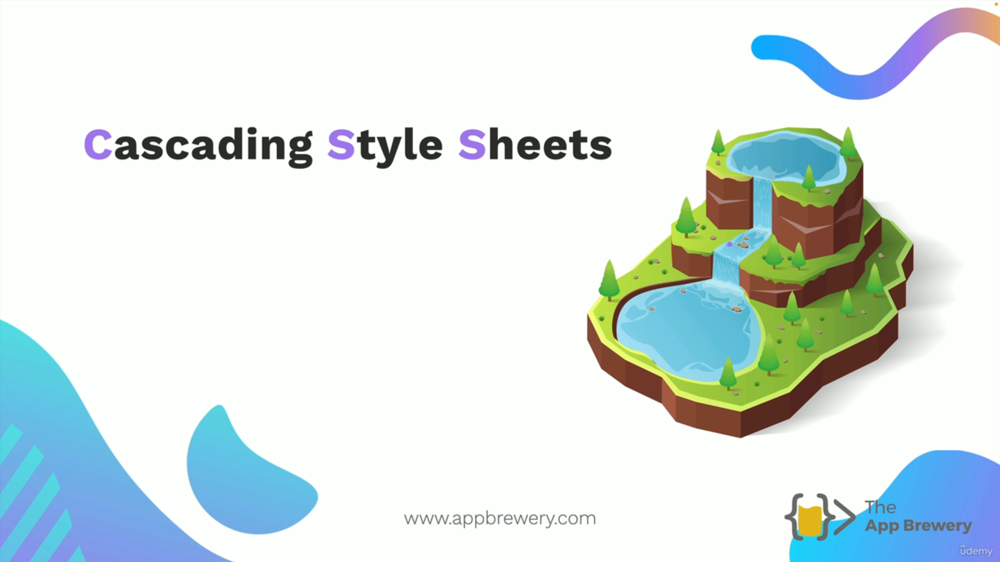
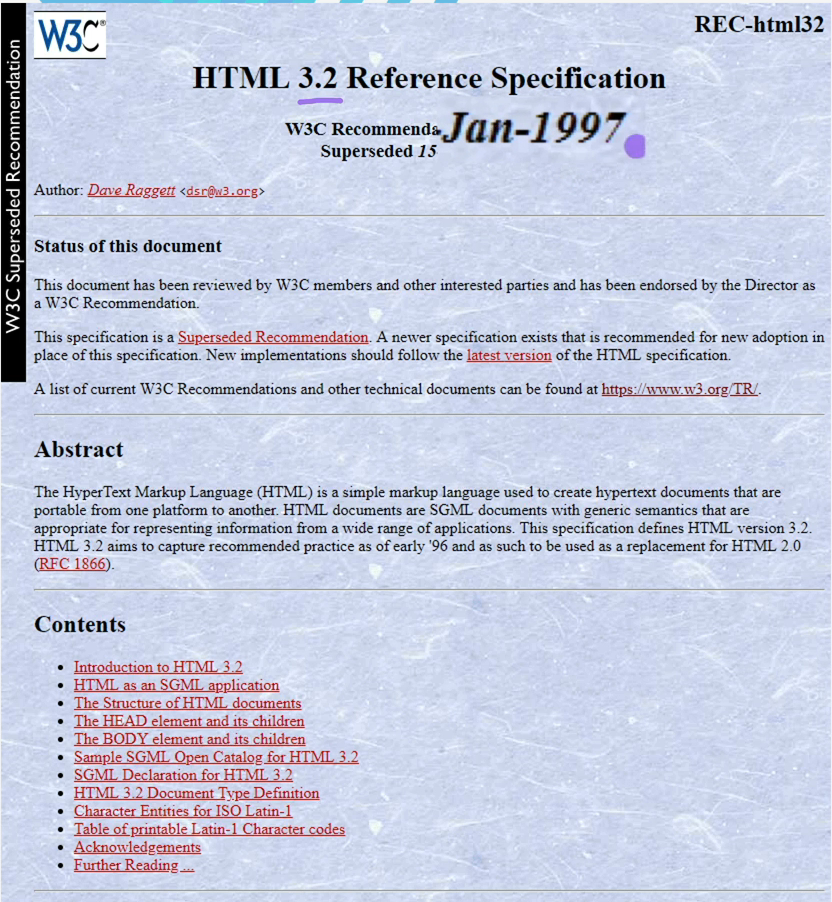
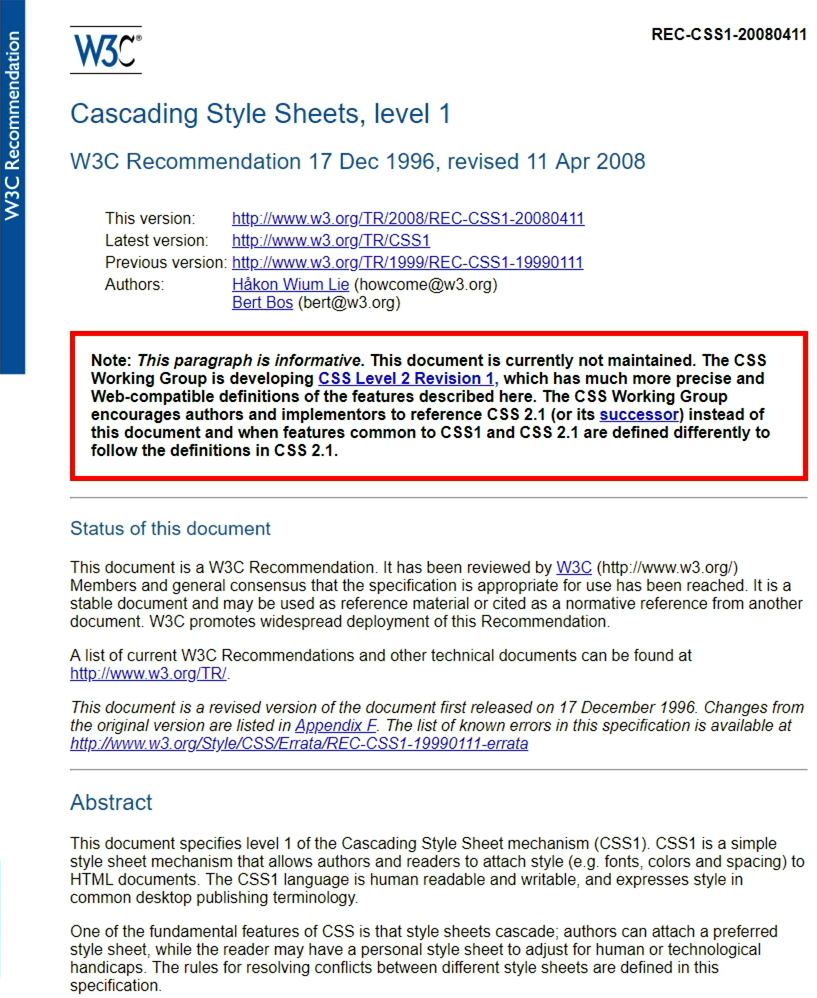

What exactly is CSS?
well, it stands for "Cascading Style Sheets".
It kind of conjures up the image of a cascade.
And a cascade is simply like a waterfall.

You have water @one level that then drops down through a waterfall into another level.
And we're going to see as we start to use these cascading style sheets, why that analogy is so apt.
Because the way that the style is applied cascades like a waterfall.
We start from the most general all the way down to the most specific styling requirements, & we're going to see that in use as we use these cascading style sheets.
The other part of this name is the "Style Sheet".
A style sheet is a type of language similar to how we had the HTML, which is a markup language, that's what the "ML" part of HTML stands for.
We have the style sheet, which is what the "SS" part stands for, & this is a language that allows us to specify how things should look in our website.
And there are many different types of style sheet languanges.
The one that's most important & what we're going to be learning all about in this section is the cascading style sheet.
But there's also others like SAAS, which stands for Syntactically Awesome Style Sheet.
LESS, which stands for Leaner CSS & many, many others.
But the most important one that every web developer needs to know is CSS.
In the very beginning when the internet was very, very new, there was no CSS, there was only HTML.
And one of the things that developers started wanting to do is style their website & make it look the way they wanted it to, but they were really, really limited by HTML.
The W3C consortium responded by releasing a new version of HTML, HTML 3.2, & this came out in 1997, so it was still in the very early days of the internet.

And what this HTML 3.2 allowed was, it introduced new HTML tags such as the font tag, which allows you to define the font size, the color & the font face.
Similarly, there was also the color attribute for font, the face attribute, the size attribute.
And these attributes allow you to change all sorts of things about the way the text looks on your website.
And then there was also the center element which allows you to format your document & define how it would be laid out on the screen.
All of these are deprecated, which in programming lingo, simply means you should no longer be using these attributes & elements.
And the reason for this is because, as you can imagine, HTML is supposed to be for content.
Now, if you add in a ton of styling into all of that content, then this is going to massively clutter up all of your HTML.

And you can imagine, this is a really, really short website & it's already got so much junk in it that we can't relly tell what exactly is the structure & content of the website.
And if you extend this to a larger website & you just want to do some simple things like give it some colors or put things into the center, then the whole HTML file is going to be many, many, many thousands of lines long, & it's impossible to differentiate the content from the styling.
So what happened next?
Well, in 1996, a new recommendation was proposed by the W3 consortium, & this was led by Hakon Wium Lie.
And he's basically the father of the Cascading Style Sheet.

And what this recommendation allows us to do is to attach styles such as font colors & spacing to our HTML documents.
And this is the breakthrough that allowed us to separate our styling from our content.
And as in many different situations, a separation of concerns, so that somebody is responsible for putting together the car headlights, & somebody else is responsible for dealing with the wheels rather than one person making an entire car.
This kind of modularity, as you'll see in coming lessons, is super important, not just in manufacturing & in real life, but also in programming.
Resource
If you want to see what CSS is able to achieve, I've built this website for you to be able to do that.
And when you first go over there, you'll see that it's just a very simple website, pretty bland.
All it's got is HTML. And now if we go ahead & press the 'Toggle CSS' button to toggle & turn on CSS, then you'll see the entire website transform & look way more beautiful.
You'll notice that if you go ahead & right-click & View Page Source, in these 2 versions, the HTML does not change @all.
The only thing that's different is the CSS that gets added.
Now don't worry too much about the script tags or how we've created our button, we're going to learn all of that later on when we learn JavaScript.
But I created this website so that you can play around with toggling the CSS on & off to see how it can transform a simple HTML website without touching any of the code inside the HTML.
And all that we're doing is adding style to our website in a completely separate language, the Cascading Style Sheet.
Toggle CSS - https://appbrewery.github.io/just-add-css/